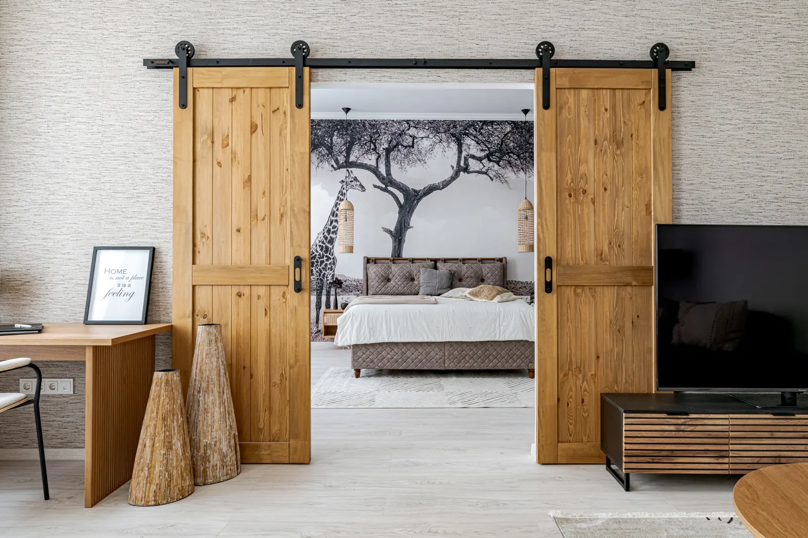
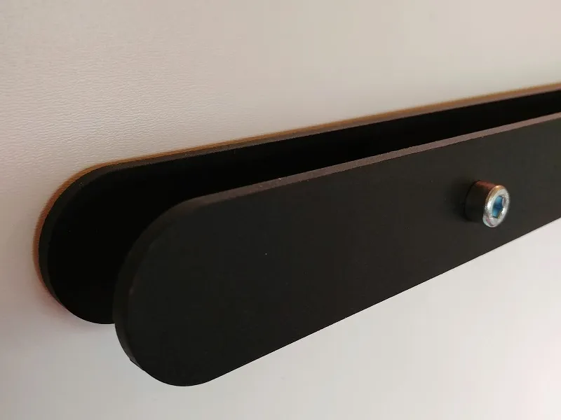
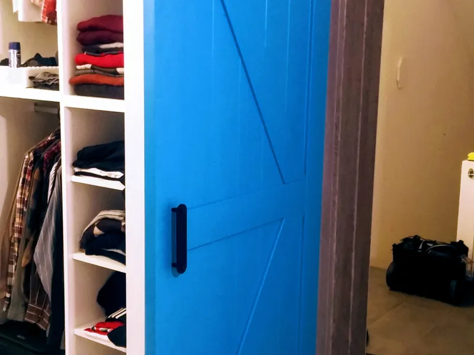
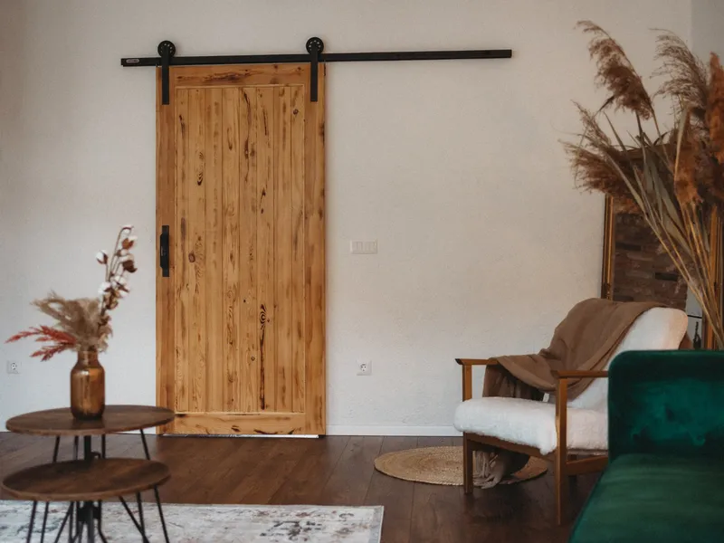

Egyedi tolóajtó dupla sínes vasalattal
Minden szettünk dupla sínnel érkezik.
A dupla sín tartja stabilan az ajtót, nem lenghet ki. A legtöbb rendszerben csak egy sín van. Nálunk kettő. Az ajtólapot, a vasalatot és a beszerelést is mi intézzük.
Kérj ajánlatotMiért a Roll’n’Door?
Nem tömegcikket árulunk. Minden ajtót és vasalatot a te falaidra, méretedre és stílusodra készítünk.

Dupla sín: stabil ajtó
Minden szettünk dupla sínnel készül, hogy az ajtó stabil legyen. Más rendszerekben csak egy sín van. Nálunk kettő.

Pont olyan, amilyet akarsz
Az ajtólapot és a vasalatot is a te méretedre készítjük. Bármilyen RAL vagy NCS színt kérhetsz.

Beszerelés nálad, országosan
Mi szereljük be az ajtót nálad. Az egész országban.
Így készül az ajtód
Hét lépés. Végig tudod, hol tartunk.
-
Írsz nekünk
Küldd el, mit szeretnél, akár pár sorban.
-
Egyeztetünk
Visszahívunk, és átbeszéljük a részleteket.
-
Ajánlatot kapsz
Az ajánlatot e-mailben küldjük el.
-
Előleg
Ha tetszik az ajánlat, előleget fizetsz, és indul a munka.
-
3D látványterv
Megmutatjuk, hogy fog kinézni az ajtód. Te hagyod jóvá.
-
Gyártás
Legyártjuk az ajtót. Ez kb. 4 hét.
-
Beszerelés
Nálad szereljük be, az egész országban.
Referenciáink
Kattints a képekre a nagyításhoz.
Gyakori kérdések
Alkalmas-e a nyílásom tolóajtóra?
Mennyibe kerül?
Kérhetek egyedi színt?
Miből készülnek a görgők, mennyire tartósak?
Látszik-e a furat a falon szerelés után?
Kérj ingyenes ajánlatot
Válaszd azt, ami neked kényelmesebb.